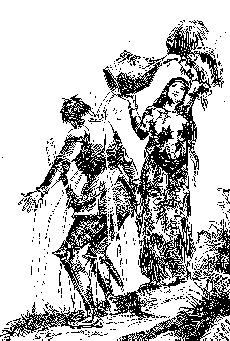

Writing Connecticut YankeeIn a way, Connecticut Yankee began with Huckleberry Finn. In 1884 MT decided to go back on tour as a live performer to help publicize Huck's novel, Webster & Co.'s first title. To accompany him on the tour he recruited George Washington Cable, the Southern novelist, and when in December a sudden rain storm drove MT into a bookstore in Rochester, New York, it was Cable who handed him a copy of Malory's Morte Darthur and suggested he try it. MT soon fell under the spell of Malory's prose and the chivalric world it recreates. He ordered a separate copy for Ozias Pond, traveling with them as tour manager, and on 4 February 1885 he wrote Livy: "We have all used the quaint language of [Malory's] book in talk in the [railroad] cars & hotels." From Indianapolis on 8 February he wrote Susy about it as "the quaintest and sweetest of all books," and she transcribed the letter into the biography of her father she was writing. TO SEE SUSY'S COPY OF MT'S LETTER, CLICK HERE It was apparently sometime during this tour that MT made the following entry in his journal, invariably cited as the seed from which Connecticut Yankee grew: Dream of being a knight errant in armor in the middle ages. Have the notions & habits of thought of the present day mixed with the necessities of that. No pockets in the armor. No way to manage certain requirements of nature. Can't scratch. Cold in the head -- can't blow -- can't get at handkerchief, can't use iron sleeve. Iron gets red hot in the sun -- leaks in the rain, gets white with frost & freezes me solid in winter. Suffer from lice & fleas. Make disagreeable clatter when I enter church. Can't dress or undress myself. Always getting struck by lightning. Fall down, can't get up. See Morte Darthur.MT had always been interested in history, especially British history. And the kind of humorous sketch suggested in this entry -- a burlesque travesty of an aristocratic icon -- had long been a staple of his. But it's interesting to associate Hank's experiences among Arthur's knights with MT's career as an errant lecturer. Both are consummate and compulsive performers whose identities -- MT as the great American humorist; Hank as Sir Boss, the mighty wizard -- are defined by the shows they put on for their audiences. As a visitor from nineteenth century America, Hank feels like a mysterious stranger in Camelot -- and perhaps in the story of Hank's popularity and alienation MT is dramatizing his own mixed feeling as the great American humorist.  According to MT,
"I began to make notes in my head for a book" almost at
once, though he doesn't seem to have begun writing it until
the next winter. By that time his mood about the distant
past had changed from satiric to nostalgic; at least,
that's the tone of the next set of notes he made in his
journal about the book, which included the following
ideas: Bring out as a holiday book. Title, "The Lost Land." . . . He mourns his lost land -- has come to England & revisited it, but it is all changed & become old, so old! -- & it was so fresh & new, so virgin before. . . . Has lost all interest in life -- is found dead next morning -- suicide.A holiday book that ends with a suicide is a startling idea, but typical of the many ambivalences MT brought to the project. It was in fact published (on 10 December 1889) as a holiday book. By then the book that began with a comic "dream" had become a mix of slapstick comedy, irreverent burlesque, sentimental pathos, political satire, moral indignation, dark humor and high-tech violence that ends with a nightmarish apocalypse and Hank's abrupt death. The novel itself is the best record of those ambivalences: MT's complex and changing intentions and feelings about the European past and the American present, about Hank's enactment of a celebrity self and his own performance as a writer. Other aspects of the novel's composition can be studied in the SOURCES AND PRE-TEXTS section of the archive. Another index of his intentions is the public reading MT gave at Governor's Island in New York on 11 November 1886 (when his central character's name was Robert Smith). On that occasion he read from the manuscript of the opening chapters, and then summed up the rest of the story. The New York papers reported his words in detail. Two of the stories are linked below. And reprintings of these stories must have reached Mrs. Mary Fairbanks, MT's mentor from the beginning of his career, in Cincinnati, because she apparently wrote him to express alarm about the mischief he might be up to with the Camelot legend. Her letter no longer survives, but MT's reply to her does, and it offers yet another (not necessarily more or less trustworthy) indication of his intentions. |
|